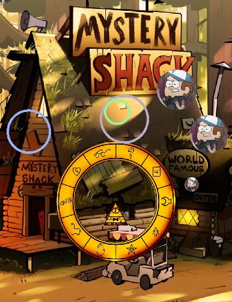
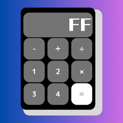
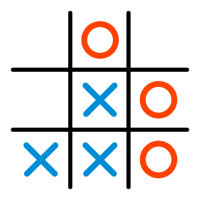

Sou estudante de Ciência da Computação na UFMG e entusiasta do desenvolvimento de software. No ambiente acadêmico, consolidei meus primeiros passos na programação programando em C, criando desde algoritmos estruturados até jogos práticos integrados com bibliotecas gráficas.
Atualmente, faço parte do processo de Trainee da iJunior, onde estou imerso na cultura de projetos de mercado e no aprendizado acelerado de tecnologias front-end como HTML, CSS e TypeScript. Meu objetivo é unir a base teórica da faculdade com a prática do mercado para construir aplicações eficientes e de alto impacto.

O jogo foi resultado final do meu Trabalho Prático de PDS 1, uma versão customizada do jogo de Nintendo 3DS "Chain Blaster".
Todo o jogo foi feito em Linguagem C e utilizando a biblioteca Allegro 5, além disso as imagens e sons foram retirados da série animada "Gravity Falls".
Na esquerda a imagem é um print do jogo, em que o triangulo é controlado pelo jogador, que deve ativar o campo de força para eliminar as bolinhas que caem.

Este projeto foi desenvolvido como um dos desafios práticos de introdução à programação, com o objetivo de construir uma calculadora funcional via linha de comando (terminal).
Todo o programa foi desenvolvido em Linguagem C, aplicando conceitos fundamentais como estruturas de controle (if/else), funções modulares para as operações matematicas e loops de repetição para o menu interativo.
(Apesar de ser um exemplo fictício consigo, de fato desenvolver esse programa com os conhecimentos que possuo sobre C)

Este projeto consiste no desenvolvimento do clássico Jogo da Velha, criado como um desafio prático para consolidar conceitos de matrizes e controle de estados na programação.
Todo o jogo foi desenvolvido em Linguagem C, utilizando matrizes bidimensionais para renderizar o tabuleiro no terminal e funções de verificação lógica para validar as jogadas, alternar os turnos e identificar as condições de vitória ou empate ("velha").
(Apesar de ser um exemplo fictício consigo, de fato, realizar esse programa com os conhecimentos que possuo sobre C)